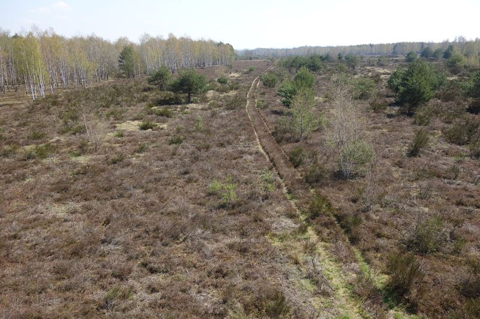
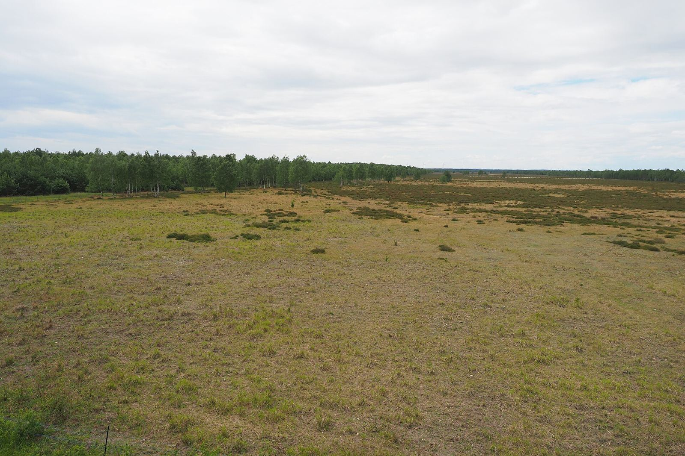

Discover
Around 6,932 hectares of protected land, recognised as a wilderness area (IUCN category Ib) and part of the Natura 2000 network.
Photo: Bybbisch94, CC BY-SA 4.0

A former military training area now develops without human intervention.
Explore the mapNorth of the town of Königsbrück in Saxony lies one of the largest nature reserves in the state. For almost a century the area was used for military training. Today the landscape is left to develop freely.
Near Zeithain on the River Elbe, the Gohrischheide and Elbniederterrasse Zeithain nature reserve protects dry heathland and open sandy areas. Both reserves are managed by the same reserve administration.